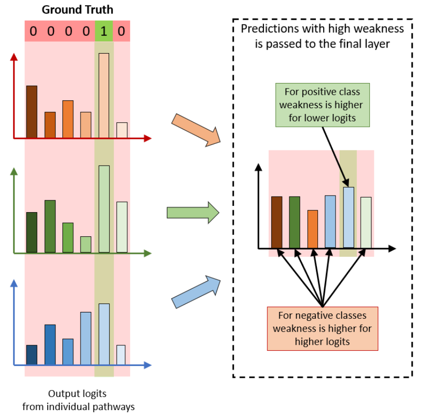
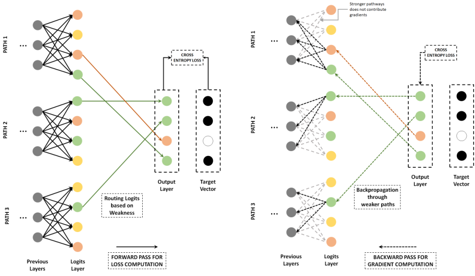

Training a network by repairing its weakest branch first
Some neural networks have several branches that each produce their own score for every class. The usual way to use them is to average the scores. We tried something different: during training, for each class we pick the branch that is doing worst and let only that branch learn. We call the method GuideBP.
The problem
A network that classifies images ends in a set of raw scores, one per class, called logits. Many designs produce several sets of logits. You can train three copies of the same network from different starting points, or attach extra classifiers to the middle of a deep network, or have one network look at different regions of the picture. The scores are then added or averaged before the loss is computed. The loss is a number that measures how wrong the network is.
Training works by backpropagation. The loss is traced backwards through the network, and each weight gets a gradient, a nudge telling it which way to move. With averaging, the gradient is split equally among all branches. A branch that already handles a class well still receives its share, and a weak branch gets no extra attention.
The idea
We wanted the learning to concentrate on what is still wrong. A team is as strong as its weakest player, and averaging works less well when one branch lags. So we compute a weakness score for every class score in every branch. For the true class, a branch is weaker the lower its score. For every wrong class, a branch is weaker the higher its score.

For each class we then pick the branch with the highest weakness and build a new set of logits from those picks. The loss is computed on this combined set. Because only the picked entries are in the loss, the gradient flows back through the weakest pathways only. Stronger pathways are left alone for that class and that example.

How it works
After training there are two ways to make a prediction. In mean inference we simply average the branches' outputs. In strong inference we take, for each class, the branch with the least weakness, judged against the network's own best guess because the true label is unknown at test time.
We tried the method in four settings. M1 combines three ResNet18 networks, a standard image network. M2 uses GoogLeNet, which normally has extra classifiers that are cut away after training. We keep them, so they also take part at test time. M3 builds on a YOLOv3-style network and produces predictions for 16 regions of its internal feature maps. M4 combines 23 small networks that each read a different region of the input. Nothing was pre-trained, and the experiments cover 13 image datasets, from handwritten digits in several scripts to SVHN and CIFAR-10.
What we found
Averaged over the datasets, GuideBP beat plain averaging in every setting. The accuracies below are means over the datasets, with the best of our two inference modes on the right.
- M1, three ResNet18s: 97.54% with averaging, 98.01% with GuideBP. A single ResNet18 scored 97.31%.
- M2, GoogLeNet with extra classifiers: 97.32% with averaging, 97.80% with GuideBP. Plain GoogLeNet scored 96.73%.
- M3, feature regions: 94.75% with averaging, 95.78% with GuideBP.
- M4, input regions: 95.61% with averaging, 96.52% with GuideBP.

The paper reports that at least one of the two inference modes beat averaging on every dataset. The gains average between 0.47 and 1.03 percentage points depending on the setting, and they are largest for the region-based M3 and M4. In the paper's comparison, which setting wins depends on the data. M3 was best on the six small CMATERdb handwriting sets and on Fashion-MNIST, whose images follow a fairly fixed template. M2 was best on four of the five MNIST-like sets and on SVHN. M1 was best on CIFAR-10, where objects move around the frame a lot.
What it does not do
GuideBP is a way to combine outputs, not a new record-setting model, and the paper says it is not meant as a benchmark. The region-based variants are weak on natural images: M3 reached only 75.00% on CIFAR-10 and 86.40% on SVHN, against 95.20% and 96.00% for M1. A McNemar test, which checks whether two classifiers differ by more than chance, found no significant difference for M1 on most datasets. The paper reports significant differences for the other settings on nearly all datasets, with MNIST the exception, probably because scores there are already saturated.
For now the method acts only on the output logits. Whether the same idea can work on the inner layers of a network is the obvious next question, and we have not tried it.
How to cite the paper
Swarnendu Ghosh, B Mandal, T Gonçalves, P Quaresma, M Nasipuri, N Das (2023). GuideBP: Guided Backpropagation in Multi-output Neural Networks by Channeling Gradients Through Weaker Logits. 4th International Conference on Frontiers in Computing and Systems (COMSYS 2023), pp. 165–183 · Springer.